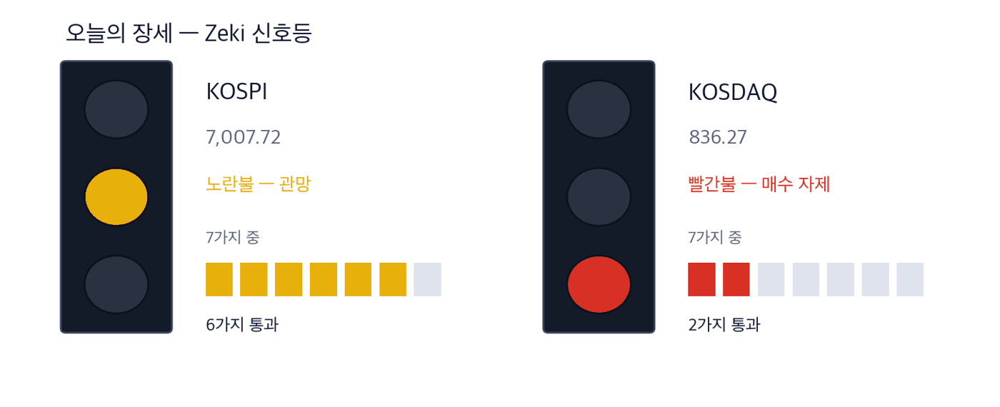
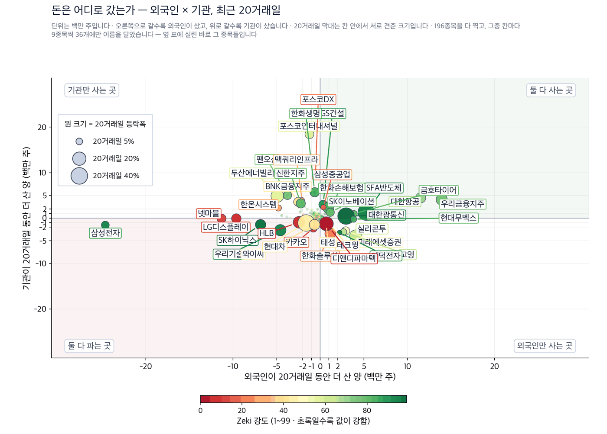
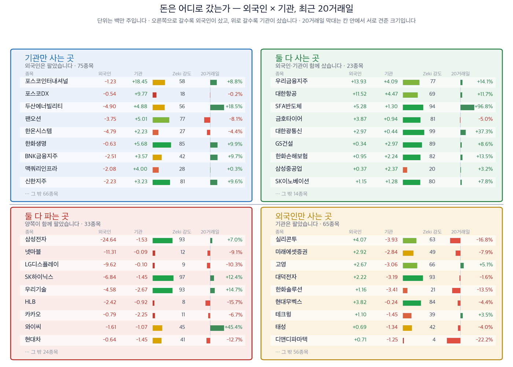

코스피 7,007.72 | 코스닥 836.27 | 나스닥 27,122.09 | WTI 92.17달러 | 제키 신호등 노란불 |

| 켜진 등 | 오늘 시장이 어떤 상태인지 알려 줍니다. 초록은 매수 우위, 노랑은 관망, 빨강은 매수 자제입니다. |
| 채워진 칸 | 7가지 조건 중 몇 가지를 만족하는지입니다. 많이 만족할수록 오르는 종목이 넓게 퍼져 있습니다. |
| 칸이 다 찼는데 노랑·빨강이면 | 다른 이유로 한 단계 낮춘 것입니다. 그림 아래에 그 이유를 적었습니다. |
제키 신호등은 시장이 지금 어떤 상태인지를 7가지로 재서 하나로 줄인 것입니다. 초록불은 매수 우위, 노란불은 관망, 빨간불은 매수 자제입니다. 코스피는 7가지 가운데 6가지를 지났지만 추세 지표가 0 아래여서 한 단계 낮춘 노란불입니다. 코스닥은 2가지에 그쳐 빨간불입니다.
대기 — 신호등이 뜻하는 자세입니다.
간밤 뉴욕은 올랐습니다. 나스닥지수는 2.26% 올라 27,122.09로 마쳤고, S&P 500 지수는 1.49% 올라 7,764.70에 마쳤습니다. 미 국채 10년물 금리는 4.96%로 내렸습니다.
① 간밤에 국제 유가가 하루 만에 8% 무너졌는데 서울은 그것을 모르고 마감했습니다. 한국 증시는 오후 3시 30분에 닫고 뉴욕은 그 뒤에 열립니다. 서부텍사스산 원유는 배럴당 92.17달러로 8.09% 내렸고, 브렌트유도 96.22달러로 7.36% 내렸습니다. 두 유종이 같이 내렸으므로 만기 교체에 따른 착시가 아닙니다. 오늘 오전에 값이 먼저 갈릴 곳은 기름을 사서 쓰는 회사와 파는 회사입니다.
② 저희 업종 순위 1위가 석유와가스입니다. 9월 18일 종가 기준으로 이 업종의 제키 강도 중간값은 90으로 22개 업종 가운데 가장 높습니다. 그 순위를 떠받치던 원유 가격이 하룻밤 사이에 무너졌습니다. 순위는 지난 값으로 매긴 것이고, 그 값을 만든 조건은 어제 바뀌었습니다.
③ 유가와 상관없이 오르는 곳도 있습니다. 적층세라믹커패시터(MLCC) 값이 오르고 있습니다. 삼화콘덴서(001820)는 저희 기준 4가지를 모두 넘었고, 20거래일 동안 58.33% 올랐습니다. 이 회사의 근거는 유가가 아니라 인공지능 서버에 들어가는 부품 수요입니다.
| 날짜 | 무엇을 보는가 | 넘으면 어떻게 되는가 |
|---|---|---|
| 9월 22일(화) | 트럼프 대통령 유엔총회 연설 | 이란과 만나겠다는 말이 나오면 유가는 한 번 더 내립니다. 정유주가 먼저 움직입니다 |
| 9월 23일(수) | 페제시키안 이란 대통령 유엔총회 연설 | 두 정상이 실제로 마주 앉으면 간밤의 8% 하락이 되돌려지지 않습니다 |
| 9월 24일(목) | 트럼프 대통령과 시진핑 주석 회담 시작(워싱턴) | 희토류와 인공지능이 의제에 오릅니다. 반도체와 소재 종목에 먼저 닿습니다 |
한국경제 9월 22일자 국제면은 트럼프 대통령이 유엔총회에서 페제시키안 이란 대통령을 만날 수 있다는 뜻을 밝혔다고 전했습니다. 같은 지면에 군사 옵션을 고려하고 있다는 말도 함께 실렸습니다. 지면은 두 갈림길을 다 적었고, 뉴욕은 그날 밤 한쪽에만 값을 매겼습니다. 미국 증시에서 에너지 업종이 가장 부진했습니다. 셰브런이 2% 내려 하락을 이끌었습니다. 까닭은 미국과 이란의 대화 기대였습니다. (한국경제 9/22자 · IBD 9/21)
한국은 반대쪽을 준비해 왔습니다. 한국석유공사는 지난 3월부터 석유위기대응단을 가동해 비축유 우선구매권을 행사하고 원유 스와프를 도입했습니다. 호르무즈 해협이 막혀 유가가 오를 때를 6개월 넘게 대비한 것입니다. 그 대비가 틀렸다는 뜻이 아닙니다. 다만 오늘 아침 값을 움직이는 것은 그 반대 방향입니다. (한국경제 9/22자)
한국 정유사는 미국 정유사와 사정이 다릅니다. 미국 멕시코만 회사들은 국내 원유를 파이프로 받지만, 한국 회사들은 중동 원유를 배로 사 옵니다. 원유 가격이 내리면 이미 사 둔 재고의 값도 함께 내려 손실이 생깁니다. 동시에 정제 마진은 넓어집니다. 두 힘이 반대로 작용하므로 한 방향을 미리 말하지 않겠습니다. 오늘 아침 거래량이 어느 쪽에 붙는지가 답입니다.
| 종가 | 당일 | 한 주 | 20거래일 | 석 달 | 제키 강도 | 고점 대비 |
|---|---|---|---|---|---|---|
| 153,900원 | +2.81% | +5.77% | +8.99% | +56.72% | 92 | -7.23% |
| 누가 | 에쓰오일, 국내 정유 3사 가운데 한 곳입니다. |
| 무엇을 | 중동에서 배로 사 온 원유를 정제해 경유와 휘발유로 팝니다. |
| 언제 | 9월 21일 2.81% 올라 153,900원에 마쳤습니다. 국제 유가는 그 뒤에 8% 내렸습니다. |
| 어디서 | 유가증권시장에 상장돼 있습니다. 외국인 지분이 79.40%입니다. |
| 왜 | 원유 가격이 내리면 재고 평가에서는 손실이, 정제 마진에서는 이익이 생기기 때문입니다. |
| 어떻게 | 사 오는 값과 파는 값이 같이 움직이지 않는 기간에 실적이 갈립니다. |
| 종가 | 당일 | 한 주 | 20거래일 | 석 달 | 제키 강도 | 고점 대비 |
|---|---|---|---|---|---|---|
| 140,200원 | +2.34% | +4.71% | +7.76% | +48.52% | 80 | -8.66% |
| 누가 | SK이노베이션, 정유와 배터리를 함께 하는 회사입니다. |
| 무엇을 | 원유를 정제해 팔고, 전기차 배터리도 만듭니다. |
| 언제 | 9월 21일 2.34% 올라 140,200원에 마쳤습니다. |
| 어디서 | 유가증권시장에 상장돼 있습니다. 하루 거래대금이 1,855억원으로 이 명단에서 가장 많아 드나들기 쉽습니다. |
| 왜 | 정유 부문이 에쓰오일과 같은 조건을 만나기 때문입니다. |
| 어떻게 | 배터리 부문이 함께 있어 정유 한쪽만 보는 회사보다 값의 흔들림이 작습니다. |
기름을 사서 쓰는 쪽은 반대입니다. 항공사는 연료가 비용에서 가장 큰 항목입니다. 유가가 내리면 그만큼 비용이 줄어듭니다.
| 종가 | 당일 | 한 주 | 20거래일 | 석 달 | 제키 강도 | 고점 대비 |
|---|---|---|---|---|---|---|
| 29,050원 | -0.34% | -2.02% | +11.73% | -0.17% | 69 | -4.28% |
| 누가 | 대한항공, 국내 최대 항공사입니다. |
| 무엇을 | 연료를 사서 승객과 화물을 나릅니다. 연료비가 비용에서 가장 큰 항목입니다. |
| 언제 | 9월 21일 0.34% 내려 29,050원에 마쳤습니다. 20거래일 동안에는 11.73% 올랐습니다. |
| 어디서 | 유가증권시장에 상장돼 있습니다. |
| 왜 | 유가가 내리면 연료비가 줄어 이익이 늘기 때문입니다. |
| 어떻게 | 연료비는 실적에 몇 달에 걸쳐 반영됩니다. 하루 유가로 바로 바뀌지 않습니다. |
한국경제 9월 22일자 증시면은 적층세라믹커패시터(MLCC) 값이 오르고 있다고 전했습니다. 엔비디아의 차세대 인공지능 서버에 들어가는 부품입니다. 시장조사업체 트렌드포스에 따르면 현재 주력 제품 한 랙에 이 부품이 약 44만 개 들어갑니다. 하반기에 나올 차세대 제품에는 약 60만 개가 들어갑니다. 30% 늘어나는 것입니다. (한국경제 9/22자)
만드는 쪽이 공급을 줄이고 있다는 것이 이 이야기의 핵심입니다. 일본 무라타는 9개 제품군의 일부 품번을 단계적으로 생산 중단한다고 고객사에 알렸습니다. 삼성전기도 일부 제품이 2027년 8월까지 재입고가 어렵다고 발표했습니다. 새 생산 라인이 실제로 돌기까지 12~24개월이 걸립니다. 수요가 늘어서가 아니라 공급이 줄어서 값이 오르는 구조입니다.
값이 가장 크게 움직인 곳은 삼성전기였습니다. 9월 21일 3.17% 올라 1,432,000원에 마쳤습니다. 그러나 이 회사는 저희 진입 조건인 추세 지표가 아직 0 아래여서 카드로 만들지 않았습니다. 석 달 동안 28.29% 내린 자리에서 이제 막 돌아서는 중이기 때문입니다. 저희는 값이 돌아선 것을 확인한 뒤에 이름을 올립니다.
| 종가 | 당일 | 한 주 | 20거래일 | 석 달 | 제키 강도 | 고점 대비 |
|---|---|---|---|---|---|---|
| 146,300원 | +1.67% | +6.32% | +58.33% | +10.92% | 97 | -23.04% |
| 누가 | 삼화콘덴서, 범용 적층세라믹커패시터를 만드는 회사입니다. |
| 무엇을 | 스마트폰과 컴퓨터에 들어가는 보통 등급의 부품을 만듭니다. |
| 언제 | 9월 21일 1.67% 올라 146,300원에 마쳤습니다. 20거래일 동안 58.33% 올랐습니다. |
| 어디서 | 유가증권시장에 상장돼 있습니다. 하루 거래대금은 1,528억원입니다. |
| 왜 | 앞선 회사들이 인공지능 서버용 고가 제품에 생산 능력을 몰아주면서 보통 등급 제품이 모자라졌기 때문입니다. |
| 어떻게 | 모자라진 물량과 오른 값이 이 회사의 매출로 옮겨 옵니다. 올해 영업이익 시장 전망치는 299억원으로 작년보다 91.78% 많습니다. |
| 종목 | ①20거래일 상승 | ②강도 90↑ | ③외국인 순매수 | ④기관 순매수 | 충족 | 근거의 무게 |
|---|---|---|---|---|---|---|
| 삼화콘덴서(001820) | O | O | O | O | 4/4 | 근거 확실 |
| 에쓰오일(010950) | O | O | O | O | 4/4 | 근거 확실 |
| SK이노베이션(096770) | O | X | O | O | 3/4 | 확인 필요 |
| 대한항공(003490) | O | X | O | O | 3/4 | 확인 필요 |
| 두산에너빌리티(034020) | O | X | X | O | 2/4 | 확인 필요 |
| 한전기술(052690) | O | X | X | O | 2/4 | 확인 필요 |
네 칸은 ①20거래일 동안 올랐는가 ②제키 강도가 90 이상인가 ③외국인이 20거래일 순매수했는가 ④기관이 20거래일 순매수했는가입니다. O의 개수가 근거의 무게를 정합니다. 사람이 따로 고르지 않습니다.
두산에너빌리티(034020)와 한전기술(052690)은 2가지씩만 넘었습니다. 한국경제 9월 22일자는 한국이 웨스팅하우스 지분을 미국과 7%대에서 협의 중이라고 전했습니다. 원전 이야기는 살아 있지만 값과 수급이 아직 따라오지 않았습니다. 두 회사 모두 외국인이 20거래일 동안 순매도했습니다. 기사가 그럴듯해도 값이 따라오지 않으면 저희는 카드로 만들지 않습니다.
아래 두 그림은 저희가 보는 종목 전부를 외국인과 기관의 20거래일 순매수로 갈라 놓은 것입니다. 수급 자료의 마지막 기록일은 9월 17일입니다 — 시세보다 이틀 이릅니다.


| 이 그림이 말하지 않는 것 | 같은 기간의 수급과 등락을 나란히 놓은 것입니다. 앞으로는 이렇습니다 — 외국인과 기관이 사면 하루 이틀은 실제로 오릅니다. 그 다음 되돌립니다. 그리고 그 폭이 세금과 수수료보다 작습니다. 그래서 이 그림을 보고 사고파시면 손해입니다. 둘 다 사들이는 것을 보고 그 다음 날 사면, 20거래일 뒤에 올라 있을 확률은 48%입니다 — 아무 종목이나 골랐을 때(49%)와 같습니다. 저희가 503종목 17년치로 쟀습니다. |
| 네 칸 | 가로와 세로 두 값이 각각 기준선을 넘었는지로 넷을 가릅니다. 오른쪽 위는 둘 다 넘은 곳, 왼쪽 아래는 둘 다 못 넘은 곳, 나머지 두 칸은 한쪽만 넘은 곳입니다. 칸 이름이 그 칸에 든 종목의 상태를 한 문장으로 적어 둔 것입니다. |
| 가운데 두 칸 | 두 기간을 비교하는 자리입니다. 글자 A~E가 있으면 이 업계가 쓰는 표준 등급으로, A는 강한 매수, B는 매수 우세, C는 매수와 매도가 반반, D는 매도 우세, E는 강한 매도를 뜻합니다(전체를 다섯으로 나눈 순위라 A가 상위 20%입니다). 숫자가 있으면 그 기간에 산 양에서 판 양을 뺀 것입니다. |
| 칸마다 9종목 | 그 칸에서 움직임이 가장 큰 순서입니다. 나머지는 칸 아래에 몇 종목인지만 적었습니다. 옆 산점도가 이름을 다는 종목이 바로 이 9종목씩입니다. |
| 20거래일 막대 | 0을 가운데 두고 오른쪽이 상승, 왼쪽이 하락입니다. 길이는 같은 칸 안에서만 서로 비교하십시오 — 칸마다 기준이 다릅니다. |
| Zeki 강도 | 1~99 순위입니다. 막대가 길수록, 초록에 가까울수록 그 종목의 주가가 시장에서 강합니다. |
| 종목 | 20일 동안 더 산 양(주) | Zeki 강도 | 20거래일 등락 | 기준일 |
|---|---|---|---|---|
| 우리금융지주 316140 | +13,931,405 | 77 | +14.1% | 09-17 |
| 대한항공 003490 | +11,524,964 | 69 | +11.7% | 09-17 |
| SFA반도체 036540 | +5,283,682 | 94 | +96.8% | 09-17 |
| 실리콘투 257720 | +4,073,723 | 63 | -16.8% | 09-17 |
| 금호타이어 073240 | +3,870,560 | 81 | -5.0% | 09-17 |
| 종목 | 20일 동안 더 산 양(주) | Zeki 강도 | 20거래일 등락 | 기준일 |
|---|---|---|---|---|
| 삼성전자 005930 | -24,638,623 | 93 | +7.0% | 09-17 |
| 넷마블 251270 | -11,309,618 | 12 | -9.1% | 09-17 |
| LG디스플레이 034220 | -9,620,116 | 9 | -10.3% | 09-17 |
| SK하이닉스 000660 | -6,835,070 | 97 | +12.4% | 09-17 |
| 두산에너빌리티 034020 | -4,904,491 | 56 | +18.5% | 09-17 |
| 종목 | 20일 동안 더 산 양(주) | Zeki 강도 | 20거래일 등락 | 기준일 |
|---|---|---|---|---|
| 포스코인터내셔널 047050 | +18,452,113 | 58 | +8.8% | 09-17 |
| 포스코DX 022100 | +9,771,730 | 18 | -0.2% | 09-17 |
| 한화생명 088350 | +5,679,320 | 85 | +9.9% | 09-17 |
| 팬오션 028670 | +5,007,944 | 77 | -8.1% | 09-17 |
| 두산에너빌리티 034020 | +4,884,345 | 56 | +18.5% | 09-17 |
| 종목 | 20일 동안 더 산 양(주) | Zeki 강도 | 20거래일 등락 | 기준일 |
|---|---|---|---|---|
| 실리콘투 257720 | -3,934,271 | 63 | -16.8% | 09-17 |
| 한화솔루션 009830 | -3,411,350 | 21 | -13.5% | 09-17 |
| 대덕전자 353200 | -3,194,826 | 93 | -1.6% | 09-17 |
| 고영 098460 | -3,059,110 | 66 | +5.1% | 09-17 |
| 미래에셋증권 006800 | -2,835,699 | 49 | -7.9% | 09-17 |
기사와 값이 맞아도 자금은 따로 봅니다. 아래 표는 9월 21일 하루 거래량이 넘어야 할 거래량(50일 평균)을 실제로 넘었는지를 답합니다.
| 종목 | 9월 21일 거래량 | 넘어야 할 거래량(50일 평균) | 넘었나 | 20거래일 수급(9/17 기준) | 어떻게 읽나 |
|---|---|---|---|---|---|
| 삼화콘덴서(001820) | 1,207,859 | 841,872 | 1.43배 ✓ 넘었습니다 | 외국인 매수 · 기관 매수 | 관심 — 값도 거래도 같은 쪽입니다 |
| 에쓰오일(010950) | 336,267 | 423,010 | 0.79배 ✗ 못 넘었습니다 | 외국인 매수 · 기관 매수 | 관망 — 수급은 사는 쪽인데 어제 거래가 얕았습니다 |
| SK이노베이션(096770) | 574,085 | 1,046,582 | 0.55배 ✗ 못 넘었습니다 | 외국인 매수 · 기관 매수 | 관망 — 수급은 사는 쪽인데 어제 거래가 얕았습니다 |
| 대한항공(003490) | 1,158,147 | 2,629,362 | 0.44배 ✗ 못 넘었습니다 | 외국인 매수 · 기관 매수 | 관망 — 수급은 사는 쪽인데 어제 거래가 얕았습니다 |
| 두산에너빌리티(034020) | 1,724,152 | 2,733,662 | 0.63배 ✗ 못 넘었습니다 | 외국인 매도 · 기관 매수 | 주의 — 외국인과 기관이 갈립니다 |
| 한전기술(052690) | 384,179 | 393,822 | 0.98배 ✗ 못 넘었습니다 | 외국인 매도 · 기관 매수 | 주의 — 외국인과 기관이 갈립니다 |
칸의 말은 저희가 사고판다는 뜻이 아닙니다. 관심은 값과 거래가 같은 쪽이라는 뜻이고, 주의는 두 주체가 갈렸다는 뜻이며, 관망은 어제 거래가 얕았다는 뜻입니다.
| 언제 | 무엇을 보는가 | 무엇을 뜻하는가 |
|---|---|---|
| 개장 30분(09:00~09:30) | 에쓰오일과 SK이노베이션이 오르는가 내리는가 | 오르면 시장이 정제 마진을 본 것이고, 내리면 재고 손실을 본 것입니다 |
| 오전 10시 | 코스피가 7,007.72 위를 지키는가 | 이 값은 어제 종가이며 간밤 유가 하락 이전의 값입니다 |
| 마감 30분(15:00~15:30) | 삼화콘덴서 거래량이 50일 평균 841,872주를 넘는가 | 값만 오르고 거래가 따라오지 않으면 근거가 한 칸 얇아집니다 |
제키 강도는 저희가 보는 636종목 가운데 값이 몇 등인지를 1에서 99로 매긴 것입니다. 90이면 상위 10% 안입니다. 근거의 무게는 네 칸을 몇 개 넘었는지로 정합니다. 수급의 외국인·기관 순매수는 한국거래소가 공시한 값이며 저희가 계산한 것이 아닙니다.
이 다이제스트는 신문 기사에서 출발해 저희가 들고 있지 않은 회사를 찾고, 그 회사의 값과 수급을 재서 무엇이 맞으면 이야기가 서고 무엇이 나오면 무너지는지를 적습니다.
이번 주의 날짜는 3가지입니다. 9월 22일 트럼프 대통령 연설, 9월 23일 페제시키안 이란 대통령 연설입니다. 9월 24일에는 트럼프 대통령과 시진핑 주석의 회담이 시작됩니다. 세 날 모두 유가와 반도체에 닿습니다.
본 리포트는 정보 제공 목적이며 개별 투자 자문이 아닙니다. ZekiRex™ Apex KR는 10억 원 규모의 모의 포트폴리오를 규칙 기반으로 운용합니다. 실제 계좌도, 주문도, 사고판 일도 없습니다. 표시된 성과에는 수수료와 세금, 매매 시 가격 미끄러짐이 반영되지 않았습니다. 종목 자료에는 상장폐지된 회사가 빠져 있습니다. 살아남은 회사만 세는 셈이라 성과가 실제보다 높게 나옵니다. 과거의 성과는 미래를 보장하지 않으며, 투자에는 원금 손실 위험이 따릅니다.
오늘 쓴 자료 — 한국경제 9월 22일자 지면, IBD(9월 18일·21일), 한국거래소 공시 수급, FinanceDataReader·야후 파이낸스 시세. 값은 2026년 9월 21일 종가 기준이며, 수급은 9월 17일 기준입니다. 기사 원문을 옮기지 않고 사실만 저희 문장으로 다시 썼습니다.
This is the Rex Way, ZekiRex™
| 근거의 무게 | 종목 | KOSPI를 이긴 수 | 지수를 웃돈 폭 | 지수를 밑돈 폭 | 전부 평균 |
|---|---|---|---|---|---|
| 근거 확실 | 9 | 6 / 9 | +10.87%p | -3.73%p | +6.00%p |
| 근거 있음 | 13 | 2 / 13 | +4.80%p | -4.34%p | -2.93%p |
| 확인 필요 | 20 | 6 / 20 | +4.32%p | -3.75%p | -1.33%p |
| 근거 없음 | 2 | 0 / 2 | — | -4.00%p | -4.00%p |
| 테마 제외 | 1 | 0 / 1 | — | -1.32%p | -1.32%p |
| 근거 확실 9 | +6.00%p | ||||||
| 근거 있음 13 | −2.93%p | ||||||
| 확인 필요 20 | −1.33%p | ||||||
| 근거 없음 2 | −4.00%p | ||||||
| 테마 제외 1 | −1.32%p |
가운데 선이 KOSPI입니다. 오른쪽이 웃돈 것, 왼쪽이 밑돈 것입니다. 이름 옆 회색 숫자는 그 칸의 종목 수입니다.
근거 확실 9종목 가운데 6종목이 KOSPI를 이겼습니다. 이긴 6종목은 평균 10.9%p 웃돌았고, 진 3종목은 평균 3.7%p 밑돌았습니다. 전부 합치면 지수보다 +6.0%p 입니다.
판정 진행. 두 시장 합쳐 5거래일(한 주)이 찬 것 24건 / 필요 60건. 60건이 차면 미리 정해 둔 방식으로 한 번 판정하고 그 결과를 그대로 싣습니다. 그때까지 위 숫자는 중간 경과입니다.